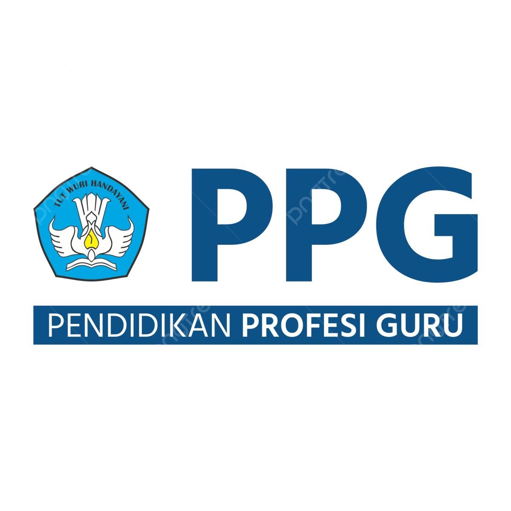
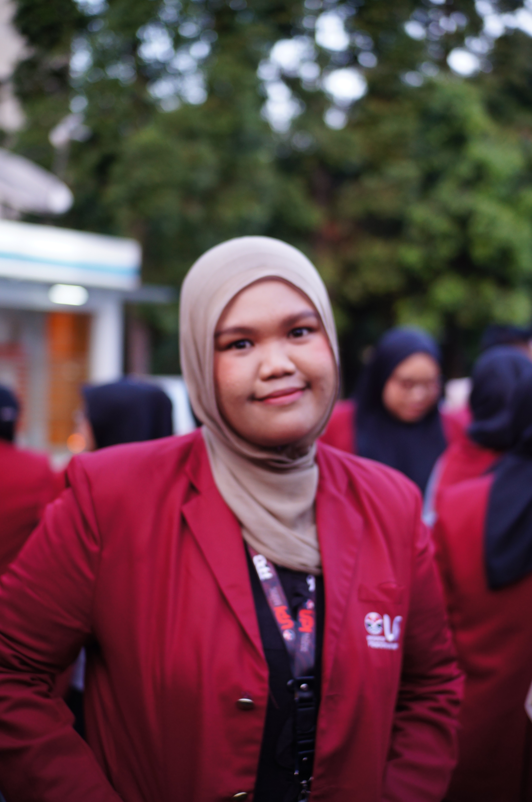

Seminar Pendidikan Profesi Guru · PPG Prajabatan · Bidang Studi Informatika
Portofolio Refleksi & Karya
Program PPG Prajabatan
Merangkum perjalanan belajar, praktik mengajar, dan karya inovasi selama menempuh Pendidikan Profesi Guru — Bidang Studi Informatika, sekaligus menjadi ruang untuk merefleksikan proses, pengalaman, dan perkembangan diri sebagai calon guru.
refleksi selama kuliah, dirangkai jadi satu perjalanan →
CONNECTION
CHALLENGE
CONCEPT
CHANGE


haii semuanya salam kenal !!
Riana Wahyu Puspitasari
NIM2531036
KelasInformatika – B
ProgramPPG Prajabatan, Bidang Studi Informatika
Lokasi PPLSMA Negeri 1 Bandung
LPTKUniversitas Pendidikan Indonesia
Angkatan2025
DP
Dosen Pembimbing
Dr. Eki Nugraha, S.Pd., M.Kom
NIP. 920171219850922101
GP
Guru Pamong
Irman Margino, S.T.
NIP. 197403172022211005